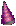
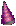

ディズニー/アニメ映画
ディズニー/アニメ映画


[あらすじと感想1] [あらすじと感想2]

|
ベビーシッターに行くとどの家にもディズニーのビデオがたくさんあります。親も子どもも好きな映画のようです。そこで私の見たディズニー/アニメ映画を好きな順に並べてみました。 このページは、留学日記の延長で映画の感想を書く調子であらすじと感想を書きました。ディズニー映画のホームページへのリンクや、キャラクター画像などはありません。よろしくね(^^)。 下線のあるタイトルをクリックするとあらすじと感想に飛びます。 |
ディズニー/アニメ映画
|
ベビーシッターに行くとどの家にもディズニーのビデオがたくさんあります。親も子どもも好きな映画のようです。そこで私の見たディズニー/アニメ映画を好きな順に並べてみました。 このページは、留学日記の延長で映画の感想を書く調子であらすじと感想を書きました。ディズニー映画のホームページへのリンクや、キャラクター画像などはありません。よろしくね(^^)。 下線のあるタイトルをクリックするとあらすじと感想に飛びます。 |
【My Ranking】
| 順位：タイトル | 掲載／更新日 | 配給会社 |
| 1. ライオンキング (The Lion King) | 98年1月16日 | Walt Disney |
| 2. 眠れる森の美女 Sleeping Beauty (英語限定版） | 98年1月20日 | Walt Disney |
| 3. アラジン (Aladdin) | 98年1月3日 | Walt Disney |
| 4. ヘラクレス (Hercurs) | 98年1月3日 | Walt Disney |
| 5. きつねと猟犬 (The Fox and the Hound) | 98年1月3日 | Walt Disney |
| 6. リトルマーメイド (Little Mermaid) | 97年11月29日 | Walt Disney |
| 7. アナスティジア (Anastasia) | 98年1月3日 | Don Bluth/Gary Goldman|
| 8. Snow White and the Seven Dwarfs （英語限定版） | 98年1月16日 | Walt Disney |
| 9. 美女と野獣 (Beauty and the Beast) | 98年1月3日 | Walt Disney |
| 10.101匹ワンちゃん (101 Dalmatians) | 98年1月7日 | Walt Disney |
| 11.ピーターパン (Peter Pan) | 98年1月3日 | Walt Disney |
| 12.不思議の国のアリス (Alice in Wonderland) | 98年1月3日 | Walt Disney |
|
ディズニー映画の好きなところは安心して見ることができるところ(^^)。中学や高校の頃、ガンダムやスリーナイン、イデオンなどのアニメを見ましたが、嫌だったことは、主人公以外の端役を簡単に死んでしまうところ。主人公がちょっとだけ話したおじいさんとか、道を教えてくれた人などが簡単に攻撃の流れ弾にあって殺されてしまう場面は、終わってからもあとあじの悪いものでした。でもディズニー映画では、必要のある場合以外は誰も死にません。これは宮崎駿アニメにも通じるところがあると思います。 でも宮崎アニメと違うところは、一定のペースで新しい作品がどんどんでることだと思います。次々でてきてヒットを飛ばす、「次のテーマは、、、」なんてかたいことは言わないで、出し惜しみしないでどんどん出す、そして見る方もどんどん飛びつく、私の好きなところです(^^)。 映画の中で、目的のものを手にいれた時、今までの生活が180度変わってしまうことをいとわないことも魅力の一つだと思います。それまでの生活を捨ててしまうことは、誰にとってもつらくて悲しいことです。心が冷たいからそれができるのではなくて、そういう勇気を持っているのではないでしょうか。そしてその時（例えば主人公が戻ってこないとわかった時）に周りの人もじめじめしないで、さらりとかわし、一緒に喜べるところはいつ見ても心が暖まります。 既存の物語をベースにしているものも多いのですが、外見の美しさを絶対的な価値観にしていないところも私の好きなところです。例えば「サリーちゃん（主人公）」がかわいいのに対して「よっちゃん（主人公でない）」がいまいち、と言うようなことを感じさせない作りが好きです。「美しいところに惹かれた」と言うような設定でない限り、主人公も端役も同じ外見を持っているところがますます、物語を身近に感じさせてくれます。 そして私のディズニー映画でとても好きなのは、いつもどこかしらおかしいところ。歌いながら転びそうになったり、戦いながらどこかにひっかかったり、細かい部分でいつも笑わせてくれます。タイミングといい、間の取り方といい、、、私の周りをみてもアメリカ人のほとんどがそういう性質を持っているような気がします(^^;。そして私もそういう部分を学びたい(^^;。 親だったら悪い言葉を使わないとか悪いことはしないという部分は安心して子どもに見せられると思います。それから、ここにいる留学生が言っていたのですが、英語のディズニーアニメは語学の勉強にもいいそうです。子どもも対称にしていますから、はっきりと話していますし、でもアメリカ人の使う言葉だからです。 ．．．ほらほら、見たくなってきたでしょう？(^^) |
 
